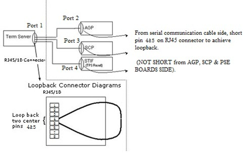

Terminal Server Loopback Diagnostic
1 Disclaimer
Depending on your service agreement, not all service tools, diagnostics, and utilities referenced in this document may be accessible. Contact your sales person for information on available service license packages.
2 Diagnostic Link:
3 Purpose
4 Components Tested
5 Requirements
6 Block Diagrams
7 Test Sequence
7.1 Top-Down Approach
This approach begins with the Terminal Server connected "normally". Faults are isolated based on test results, interpretation of the results, and subsequent action(s) suggested below.
-
Click the Run button.
-
If it passes the Terminal Server is working properly and further testing is not required.
-
If the results indicate it is not working properly: Examine the test scenario (i.e., what is connected to the Terminal Server. Search this section for matching criteria. Perform the action steps necessary to isolate problems).
7.2 Bottom-Down Approach
This approach expands testing beginning with communications to the terminal server, and concluding with confirmation of connectivity to the end-devices.
7.2.1 Terminal Server Communications
-
Start with the Terminal Server attached to the PC Linux Host via the Network Hub. The connection should be made to the Terminal Server ethernet port. Nothing else should be connected to the Terminal Server ports.
-
Click the Run button.
-
If communication problems to the Terminal Server exist, stop the test and run the Terminal Server Communications Diagnostic to better isolate the fault.
-
Examine the Test Results and identify what was detected on Ports 2-4. All should report "Timeout"
-
If any ports report something other than "Timeout", stop the test. There is an internal problem with the port(s).
-
Attach the loopback connector to the Terminal Server Port 2.
Figure 1. Term Server Loopback Block Diagram

-
Click Run to re-run the test.
-
If "Loopback" is not reported for the corresponding port, stop this test. There is an internal problem with the port or a problem with the connector/serial cable.
-
Repeat steps 6 through 8 for Ports 3 and 4.
To test Port 3, connect a RJ45 serial cable to the tested port and short pins 5 & 6 together (see diagram above).
To test Port 4, connect a RJ45 serial cable to the tested port and short pins 5 & 6 together (see diagram above)
If steps 6-8 fail for all ports, it may be due to a faulty loopback connector. Repeat steps 6-8 for all three ports using a different loopback connector.
7.2.2 Cables from Ports to End-Devices
-
Connect cables to each of the ports. Do not connect cables to the end-devices. Also, remove the shorts from all cables.
-
Click theRun button.
-
A "Timeout" should be reported for each of the ports. If not, there is a problem with the corresponding cable(s).
7.2.3 End-Devices
-
Attach
-
Port2(COM1) to the AGP processor;
-
Port3(CONSOLE) to the SCP processor; and
-
Port4(J12) to the PSE board.
-
-
Click the Run button.
-
Ports 2-3 should report their respective processors. Port 4 reports results as "Failure possible Port 4: Open connection detected".
-
If the test does not report the expected results, a problem may exist with the board.